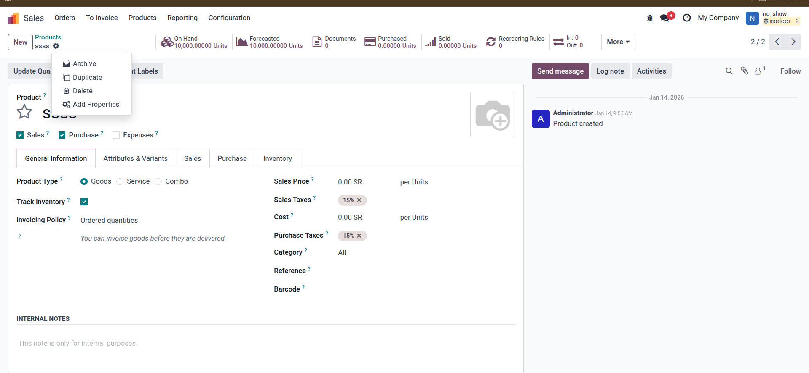
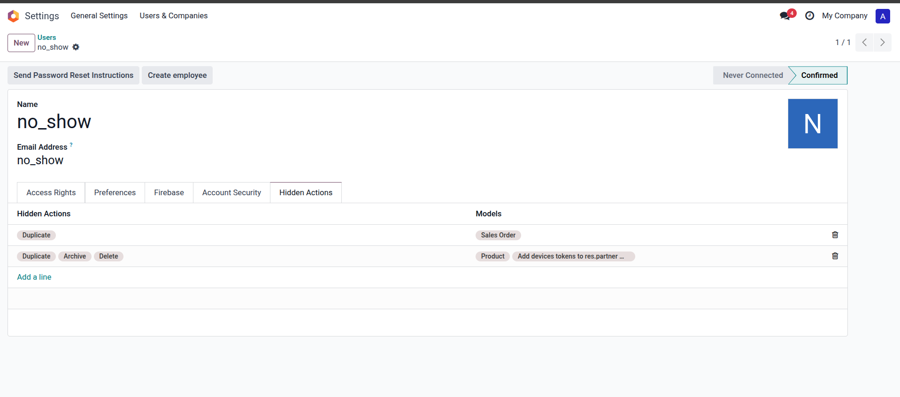

Restrict specific UI actions like Duplicate, Export, or Delete for selected users without touching access rights or business logic. This module provides a clean and dynamic solution to control Action Menu visibility per User and per Model.
All actions are visible by default.
Restricted actions are hidden based on user configuration.
All actions are visible by default.
Restricted actions are hidden based on user configuration.
Hide common actions: Duplicate, Archive, Unarchive, Delete, and Export.
Granular control: Configure different rules for different models for the same user.
User-specific: Settings are applied at the user level through a dedicated tab.
Native Feel: Built using OWL (Odoo Web Library) for the backend.
Safe: Does not affect backend business logic or access rights (CRUD).
Easy setup in just 3 steps:
1. Go to Settings > Users and select a user.
2. Open 'Hidden Actions' tab.
3. Add a rule, select Models and Actions to hide.